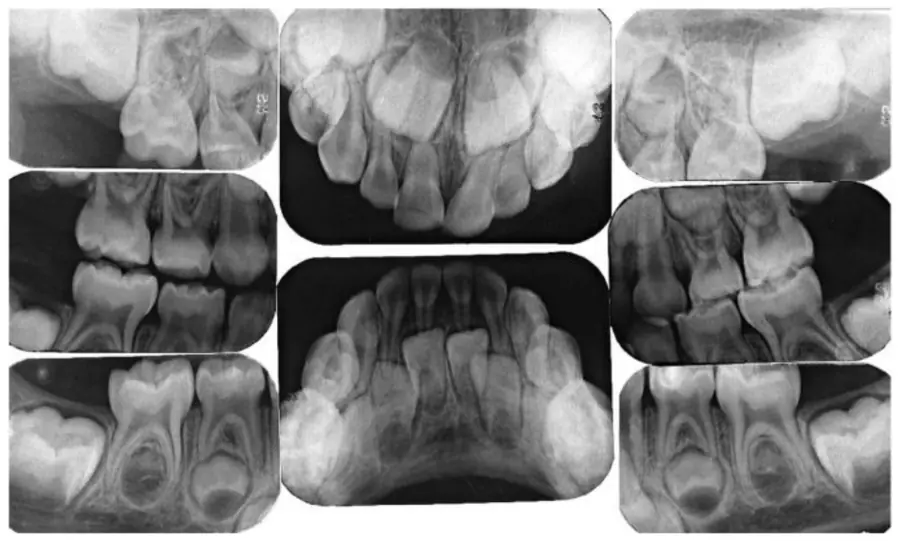
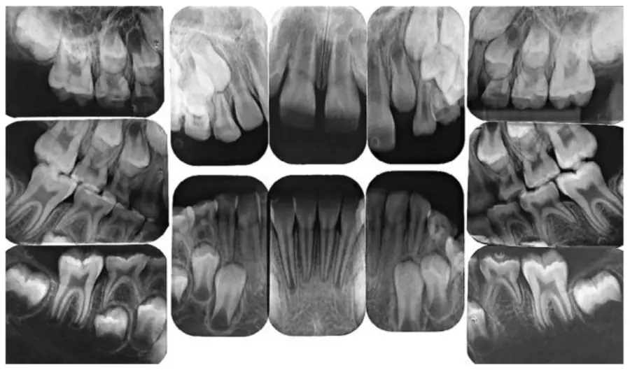

نسخه استخراجشده؛ ترجمه یا تأیید علمی انجام نشده است. وضعیت: captured
جدول ADA/FDA بر دو محور ساخته شده است: نوع مواجهه (ویزیت اولیه، بازبینی با پوسیدگی، بازبینی بدون پوسیدگی، بیماری پریودنتال، پایش رشد، شرایط دیگر) در برابر سن و مرحلهی تکامل دندانی (پنج گروه).

| گروه | توصیه در ویزیت اولیه |
|---|---|
| کودک با دندان شیری (پیش از رویش نخستین دندان دائمی) | «معاینهی رادیوگرافی فردیشده شامل نماهای پریاپیکال یا اکلوزال منتخب و/یا بایتوینگ خلفی، اگر سطوح پروگزیمال قابل مشاهده یا پروب کردن نباشند. بیماران بدون شواهد بیماری و با کنتاکتهای پروگزیمال باز ممکن است در این زمان نیازی به معاینهی رادیوگرافی نداشته باشند.» |
| کودک با دندان مختلط (پس از رویش نخستین دندان دائمی) | «معاینهی فردیشده شامل بایتوینگ خلفی با معاینهی پانورامیک، یا بایتوینگ خلفی و تصاویر پریاپیکال منتخب.» |
| نوجوان با دندان دائمی (پیش از رویش مولرهای سوم) | همان ترکیب بالا؛ و «معاینهی داخلدهانی فولماوت ترجیح دارد وقتی بیمار شواهد بالینی بیماری دندانی عمومیشده یا سابقهی درمان دندانی گسترده داشته باشد.» |
| بزرگسال دنداندار یا نیمهبیدندان | همان ترکیب بالا، با همان شرط فولماوت. |
| بزرگسال بیدندان | «معاینهی رادیوگرافی فردیشده بر پایهی نشانهها و علائم بالینی.» |
و اکنون همان توصیهها را با جزئیات بالینیشان بخوان — دقیقتر و کاربردیتر:
و یک الگوی بنیادی در کل جدول را ببین: در همهی گروهها، کلمهی «فردیشده» تکرار میشود. جدول پروتکل ثابت نمیدهد؛ چهارچوب تصمیم میدهد.
اصل حاکم بر ویزیت بازبینی: «بیمارانی که پس از کامل شدن درمان اولیهشان برمیگردند، پیش از تعیین نیاز به تصاویر افزوده، معاینهی دقیق میخواهند. تصاویر باید گرفته شوند اگر تاریخچهی پزشکی یا دندانی بیمار بهروزرسانی شده باشد، یا معاینهی بالینی دلیلی برای ارزیابی بیشتر آشکار کند.»

| گروه | با پوسیدگی بالینی یا خطر افزایشیافته | بدون پوسیدگی و بدون خطر افزایشیافته |
|---|---|---|
| کودک (شیری و مختلط) | هر ۶ تا ۱۲ ماه | هر ۱۲ تا ۲۴ ماه |
| نوجوان | هر ۶ تا ۱۲ ماه | هر ۱۸ تا ۳۶ ماه |
| بزرگسال دنداندار یا نیمهبیدندان | هر ۶ تا ۱۸ ماه | هر ۲۴ تا ۳۶ ماه |
| بزرگسال بیدندان | کاربرد ندارد | |
و یک شرط که در همهی ردیفهای کودک و نوجوان تکرار میشود: «اگر سطوح پروگزیمال بهصورت دیداری یا با پروب قابل معاینه نباشند.» — یعنی اگر بتوانی ببینی یا پروب کنی، تصویر لازم نیست.
و با جزئیات بیشتر: «اگر بیمار عوامل خطر بالای پوسیدگی — مثلاً رژیم پوسیدگیزا، بهداشت دهانی ضعیف — یا پوسیدگی بالینی مشهود داشته باشد، بایتوینگ میتواند در فواصل کوتاه تا ۶ تا ۱۲ ماه برای کودکان و نوجوانان و ۶ تا ۱۸ ماه برای بزرگسالان ساخته شود، تا زمانی که هیچ ضایعهی پوسیدهای بالینی مشهود نباشد.»
و یک نکتهی پویا که اغلب فراموش میشود: «چون ردهی خطر یک فرد میتواند تغییر کند، فاصلهی میان تصویربرداری هم میتواند تغییر کند.» — یعنی فاصله یک تصمیم ثابت نیست، یک متغیر است.
صریح و روشن: «جدا از تصویربرداری بایتوینگ، راهنما توصیه نمیکند که دیگر شکلهای تصویربرداری، از جمله تصویربرداری پانورامیک، در فواصل زمانی از پیش تعیینشده و منظم و بدون اندیکاسیون بالینی سفارش داده شوند.»
و جایگاه تصویربرداری در آن: «تصویربرداری رادیولوژیک نقش مهمی در ارزیابی بیماران با بیماری پریودنتال پس از آنکه بیماری در معاینهی بالینی کشف شد، و در پایش پیشرفت بیماری بازی میکند.» — یعنی تصویر پس از کشف بالینی میآید، نه پیش از آن.
و چه چیزی نشان میدهد؟ «تصویربرداری ممکن است در نمایش پشتیبانی استخوانی دندانها و همچنین حضور عوامل تحریک موضعی که میتوانند به بیماری کمک کنند — شامل حضور جرم یا ترمیمهای معیوب — کمک کند.» و افزون بر آن: «گاهی طول و ویژگیهای مورفولوژیک ریشههای دندان که روی تصاویر پریاپیکال دیده میشوند، ممکن است عوامل حیاتی در پیشآگهی بیماری باشند.»
و توصیهی عملیاش: «وقتی شواهد بالینی بیماری پریودنتال وجود دارد، مناسب است تصاویر داخلدهانی — عموماً ترکیبی از پریاپیکال و بایتوینگ — ساخته شوند تا شدت از دست رفتن استخوان پریودنتال تثبیت و پایش گردد.»
و در ردیفهای دیگر جدول، عبارت «قضاوت بالینی» حاکم است: برای بیماری پریودنتال، پایش رشد و تکامل دندانوصورت، و شرایط دیگر (ایمپلنت پیشنهادی یا موجود، پاتوز دندانی و کرانیوفاسیال، نیازهای ترمیمی و اندودنتیک، بیماری پریودنتال درمانشده، و رمینرالیزاسیون پوسیدگی) — جدول عدد نمیدهد و به قضاوت بالینی واگذار میکند.
و یک استثنای سنی مهم: برای بزرگسالان، پایش رشد و تکامل «معمولاً اندیکاسیون ندارد»؛ ولی برای نوجوان، «معاینهی پانورامیک یا پریاپیکال برای ارزیابی مولرهای سوم در حال تکامل» ذکر شده است.